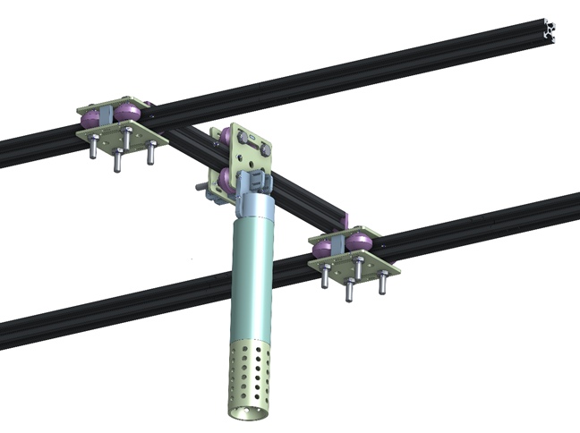
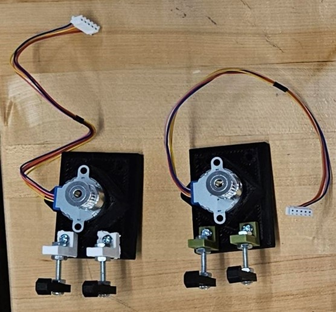
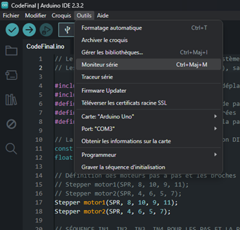
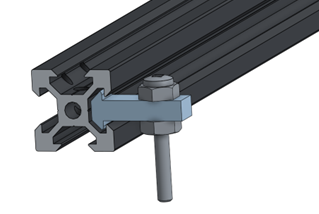

Présentation du projet : Pollinix
Contexte et Objectif du Projet
| Élément | Détail |
|---|---|
| Client | Weston Family Foundation |
| Problématique | Automatiser la pollinisation des fraises en serre pour améliorer le rendement tout en minimisant l’intervention humaine. |
| Objectif | Concevoir un dispositif semi-autonome, compact, fiable et peu coûteux. |
.jpg)
Figure 1 - Prototype Pollinix : Présentation
Méthodologie : Pensée conceptuelle & Co-création
| Étapes | Description |
|---|---|
| Empathie | Recherches utilisateurs et rencontres client pour comprendre les besoins réels. |
| Définition | Cadrage du problème : créer un système doux, précis, durable. |
| Idéation | Brainstormings et croquis d’esquisse en groupe. |
| Prototypage | Modèle semi-autonome basé sur CoreXY et composants modulaires. |
| Tests & Validation | Ajustements continus suite aux feedbacks client. |
| Présentation | Démo devant un jury lors de la Journée de la Conception. |

Figure 2 - Sous-système Mécanique : CoreXY
Architecture par Sous-Systèmes
Sous-système Mécanique
| Fonction | Technologies |
|---|---|
| Assurer le déplacement précis de la brosse | CoreXY, rails aluminium, courroies renforcées. |
| Composant principal | Brosse calibrée pour une pollinisation sans dommage. |

Figure 3 - Sous-système Électronique : Arduino
Sous-système Électronique
| Fonction | Détail |
|---|---|
| Contrôle des mouvements | Arduino UNO. |
| Moteurs | Pas à pas avec précision de 42 pas/mm. |
| Sécurité | Capteurs de fin de course. |

Figure 4 - Interface de Contrôle

Figure 5 - Gestion des Erreurs
Sous-système Structurel
| Fonction | Détail |
|---|---|
| Stabilité & robustesse | Aluminium léger. |
| Design | Modulaire pour faciliter maintenance & upgrades. |
Résultats & Apprentissage
| Résultat | Détail |
|---|---|
| Prototype fonctionnel | Oui, testé en environnement contrôlé. |
| Présentation publique | Jury et participants lors de la Journée de la Conception. |
| Compétences développées | Conception mécanique, Arduino, travail d’équipe, gestion projet. |
| Valeurs appliquées | Collaboration, innovation durable, créativité. |
Ce que ce projet m’a appris
Pollinix n’a pas seulement été un projet technique, mais une aventure humaine et collaborative. Il m’a permis de comprendre les besoins concrets des utilisateurs et de transformer une idée en un prototype concret avec une réelle valeur d’usage. Je suis fière de cette réalisation, car elle reflète ma volonté de contribuer à des innovations durables, accessibles et efficaces dans le domaine de l’ingénierie.
.jpg)
Figure 6 - Synthèse du Projet Pollinix